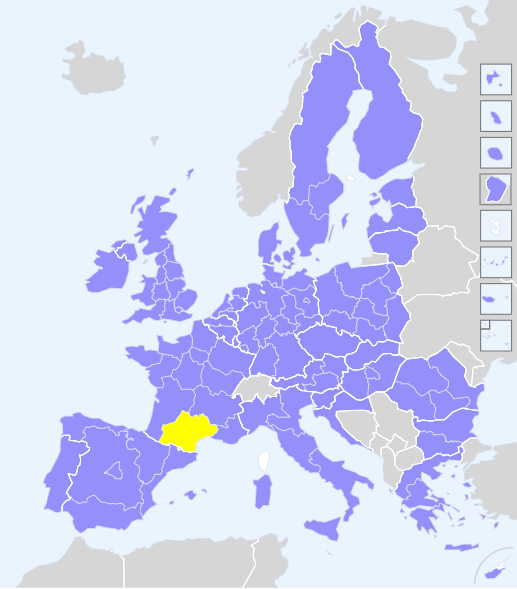
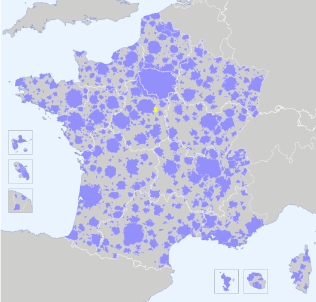

Regioviz propose d'associer représentations graphiques et cartographiques interactives pour apporter des éléments de cadrage sur la situation statistique de "mon territoire" au regard de différents espaces de référence.
Le projet est développé et maintenu par les membres du RIATE. Le développement initial (2018) répond à une demande issue du Commissariat Général à l'Égalité des Territoires afin de situer et comparer les nouvelles régions françaises en Europe à partir d'indicateurs clés pour le suivi des politiques européennes. Un premier prototype a été délivré en mars 2018 et l’équipe a depuis travaillé à l’amélioration de certaines fonctions d’analyse ainsi qu’à l’extension du projet à de nouveaux espaces d’étude, comme la France.
Cet outil d'exploration statistique a l'ambition d'être compréhensible et utilisable par des non-experts en manipulation et visualisation de données. Une attention particulière a été apportée à l'ergonomie générale de l'application, à la clarté des modules d'exploration et à l'inclusion d'aides à l'interprétation.
L'utilisateur est libre de choisir ses indicateurs, ses espaces d'étude (ensemble des régions ou régions de taille démographique semblable par exemple), son maillage territorial pour mieux contextualiser la situation statistique de son territoire.
 Regioviz - Europe correspond à la version initiale de l’application commandée par le CGET et vise à positionner et comparer les nouvelles régions françaises dans un contexte européen. La définition des indicateurs et des mailles territoriales d’analyses repose sur des échanges avec les SGAR au regard de leur besoin d’observation territoriale dans un contexte européen. Cette version de Regioviz propose 25 indicateurs issus d’Eurostat. Ces indicateurs sont structurés en 3 thèmes : structures sociales, structures économiques et structures démographiques. Trois maillages territoriaux d’analyse sont disponibles : NUTS1, NUTS2 et la maille infra nationale de décision, qui correspond à un mélange de NUTS1 et NUTS2. Le fichier de données ayant servi à alimenter l’application est disponible ici.
 Regioviz - France propose 29 indicateurs (en 2014) issus de l’INSEE. Ces indicateurs sont structurés en cinq thèmes : chômage / niveau de vie, structure de l’emploi, diplômes – formation, structures démographiques et logement. Les données sont proposées dans cinq maillages territoriaux et zonages d’étude : les zones d’emploi, les bassins de vie, les EPCI, les aires urbaines et les unités urbaines.
L'ensemble des données, métadonnées et géométries peut-être exporté pour d'autres usages. La fonction de "rapport personnalisé" permet de télécharger les représentations graphiques et cartographiques, accompagnées de textes d'aide à la lecture.
Le développement a été coordonné et réalisé par les membres de l'UMS RIATE (CNRS - CGET - Université Paris Diderot). Le code de l'outil est entièrement libre (licence CeCILL, compatible GNU GPL) et disponible en ligne sur GitHub. Il est par exemple possible de contribuer à cet outil ou de modifier son code pour l'adapter à d'autres besoins.
Regioviz est accessible depuis tous les navigateurs web modernes (Mozilla Firefox 21+, Chrome 23+, IE 11/Edge, Safari 10+). L'outil est entièrement développé en JavaScript (ES6) et utilise des bibliothèques open-source telles que d3.js